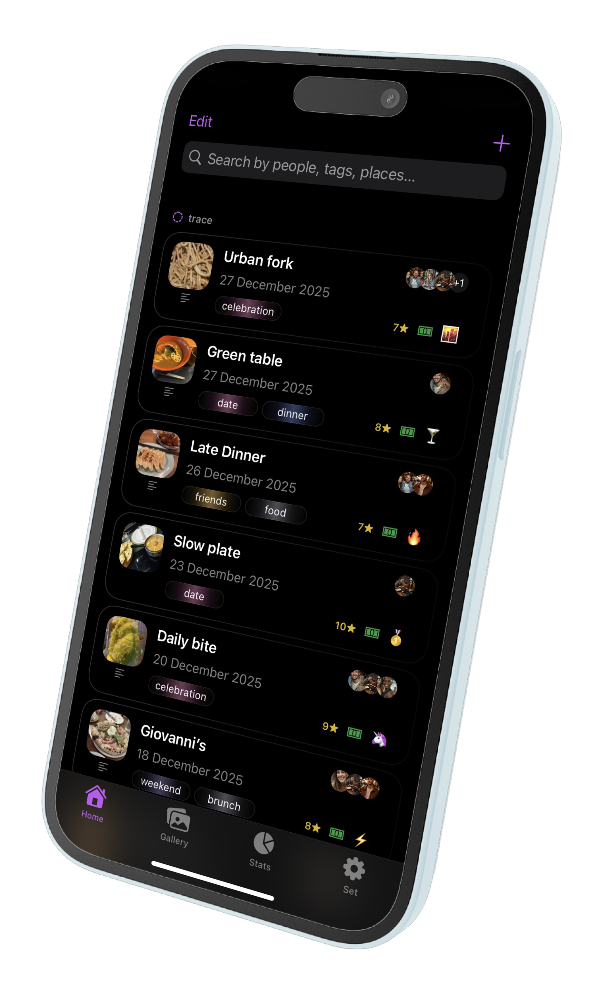
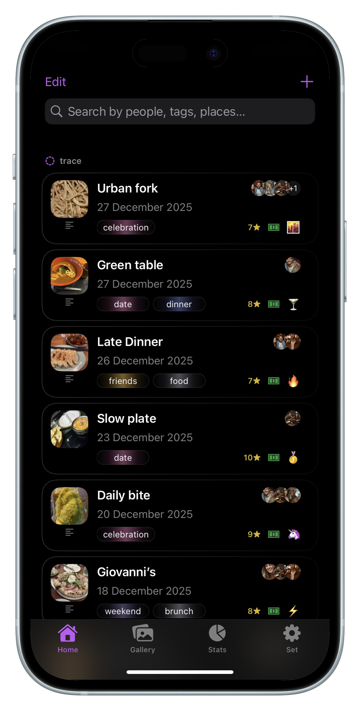
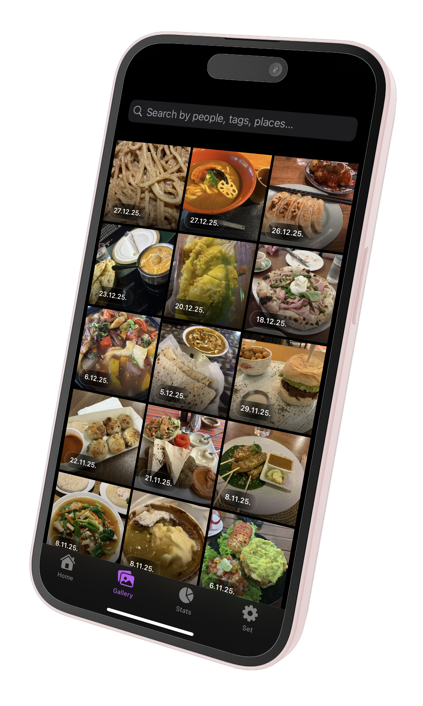
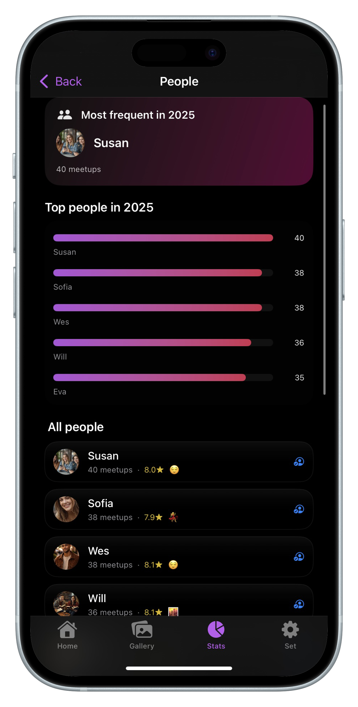
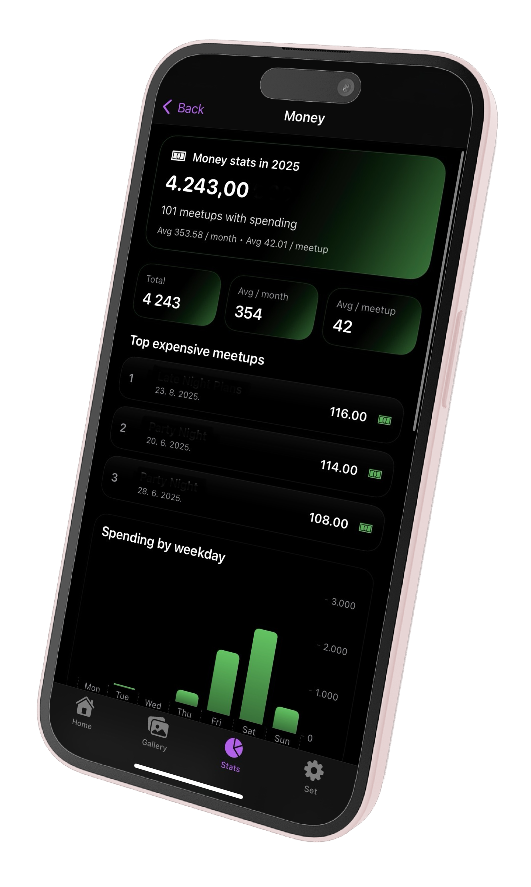
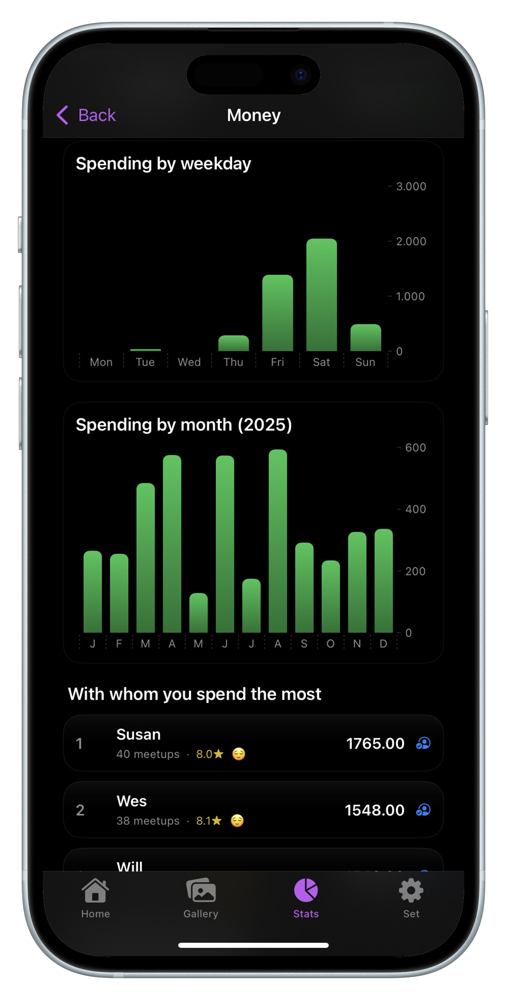
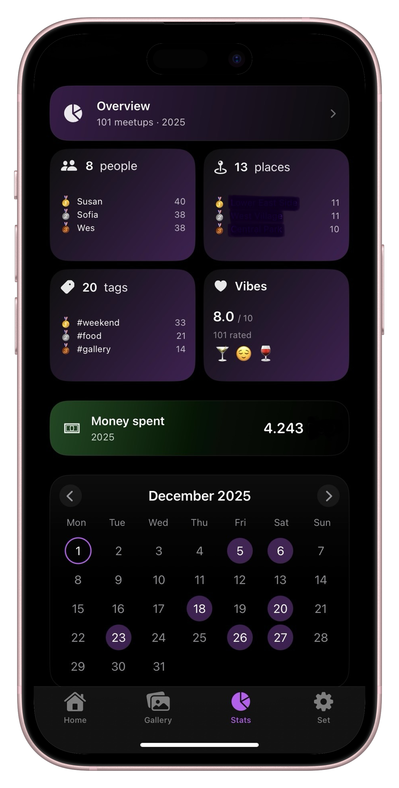

Every dinner, remembered.
Rate restaurants, track spending, see who you dine with most. Your personal food diary.
Download on the App Store
Log every restaurant visit
Add the name, date, who you went with, how much you spent, and how you felt. Rate it from 1 to 10. Never forget a great meal again.


A gallery of every meal
Every photo from every outing in one beautiful grid. Scroll back through months of dinners, brunches, and late-night bites.

Who's your favorite dining partner?
SocialLife Diary tracks who you go out with and how much you enjoy it. Discover your most frequent dinner companion — and your highest-rated evenings.


Know exactly what dining out costs you
See your total spending, average per outing, and which days of the week you spend the most. No budgeting app needed — it's all here.
Rate the vibe, not just the food
Add a mood emoji and a rating to every outing. Over time, see your average vibe score — and which restaurants (and people) bring out your best evenings.

Start your restaurant diary today
Free to download. Private. No account needed.
Download on the App Store